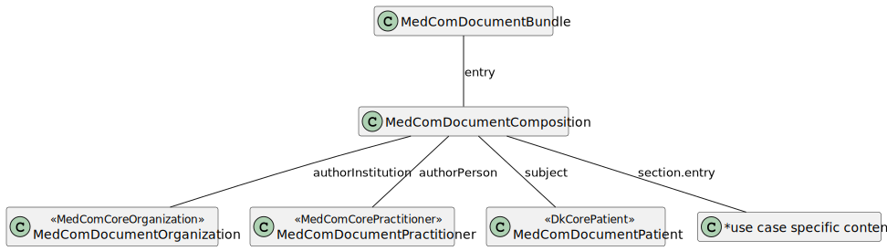

Links: Table of Contents | QA Report | Accessibility statement (Tilgængelighedserklæring)
This fragment is not visible to the reader
| Type | Reference | Content |
|---|---|---|
| web | www.medcom.dk |
|
| web | www.medcom.dk |
IG © 2024+ MedCom
. Package medcom.fhir.dk.document#1.0.1 based on FHIR 4.0.1
. Generated 2025-05-08
Links: Table of Contents | QA Report | Accessibility statement (Tilgængelighedserklæring) |
| web | www.was.digst.dk | Links: Table of Contents | QA Report | Accessibility statement (Tilgængelighedserklæring) |
| web | en.wikipedia.org | Both Bundle.link and Bundle.entry.link are defined to support providing additional context when Bundles are used (e.g. HATEOAS ). |
| web | wiki.ihe.net | This is a metadata field from XDS/MHD . |
| web | www.omg.org | Mappings for ServD ( http://www.omg.org/spec/ServD/1.0/ ) |
| web | medcomfhir.dk | This profile describes the MedComDocumentOrganization. This profile is inherited from the MedComCoreOrganization The base expectations when describing an organisation in a Danish context is to include an identifier, in terms of a Sundhundsvæsenets Organisations Register (SOR)-identifier and a name of the organization. These requirements are due to the IHE XDS metadata standard (authorInstitution attribute) which requires an identifier and a name. |
| web | hl7.dk | The MedComDocumentPatient profile describes information about a patient or citizen used in a MedComs Document standard. The MedComDocumentPatient is inherited from the DkCorePatient profile defined by HL7 Denmark. It does not inherit from MedComCorePatient, as more elements, than desired for this purpose, are marked with MustSupport. |
| web | medcomfhir.dk | This profile describes the MedComDocumentPractitioner, which is used to describe a Practitioner in a MedCom Document standard. The MedComDocumentPractitioner is inherited from the MedComCorePractitioner and requires a given and family name of the practitioner. These requirements are due to the IHE XDS metadata standard (authorPerson attribute) which requires a name. |
| web | medcomdk.github.io | The MedComDocumentReference profile is not intented to be exchanges, but can be used for internal validation of metadata associated with a document. This profile provides metadata about a document, this can be CDA, FHIR or PDF. It holds the required metadata from the IHE XDS metadata standard, and a mapping between the two can be found on GitHub pages . |
| web | medcomfhir.dk | The IG contains profiles which are used to define a general model for FHIR documents. The use case specific profiles, such as ConditionList , are maintained in an individuel IG. |
| web | hl7.dk | This IG has a dependency to the MedComCore IG and DK-core v. 3.2.0, defined by HL7 Denmark . |
| web | hl7.dk | This IG has a dependency to the MedComCore IG and DK-core v. 3.2.0, defined by HL7 Denmark . |
| web | medcomdk.github.io | More information about MedCom Document can be found here. MedCom document profiles does not alone constitute a standard, why the documentation is limited. |
| web | github.com | FHIR profiles are managed under MedCom: Source code . |
| web | www.medcom.dk | MedCom is responsible for this IG. |
|
DocumentModel.svg  |